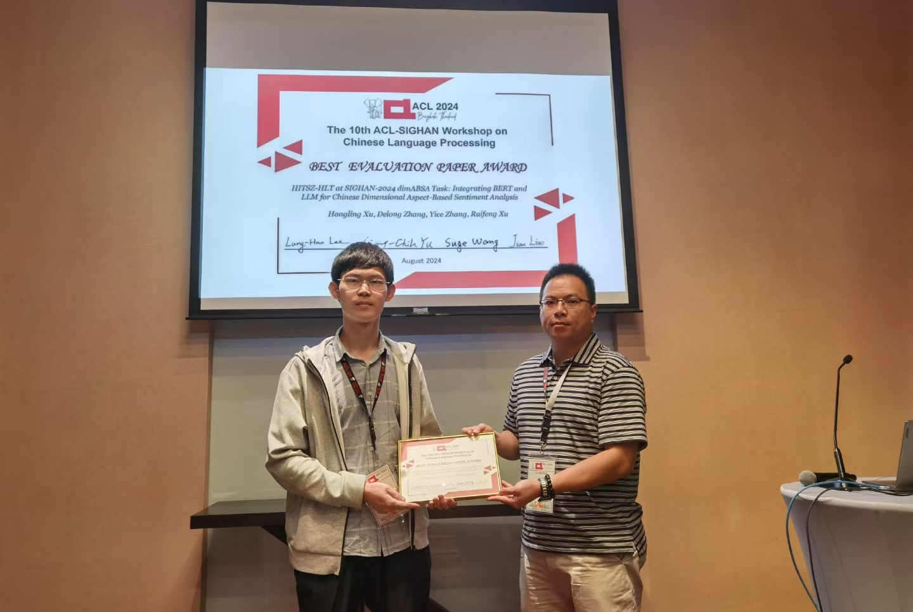

张义策（Yice Zhang）
华为诺亚实验室基础模型研究员 • 中国深圳
研究兴趣：大模型推理；指令遵循；数据合成
有研究型实习岗位（base深圳，硕博生）。如感兴趣，欢迎联系我。
E-mail: zhangyc_hit [at] 163.com
Google Scholar | Huggingface | Github | 知乎Biography
张义策毕业于哈尔滨工业大学，目前是华为诺亚实验室的基础模型研究员，致力于华为盘古大模型的对齐工作。 主要研究方向包括系统指令遵循、大模型推理、数据合成、知识蒸馏、情感分析等。教育经历
2014.09 - 2018.07 哈尔滨工业大学计算机科学与技术学院 学士
2018.09 - 2020.07 哈尔滨工业大学计算机科学与技术学院 硕士 导师为刘远超副教授
2020.09 - 2025.03 哈尔滨工业大学（深圳）计算机科学与技术学院 博士 导师为徐睿峰教授
Publications [* denotes equal contribution]
-
Comprehensive and Efficient Distillation for Lightweight Sentiment Analysis Models.
Guangyu Xie*, Yice Zhang*, Jianzhu Bao, Qianlong Wang, Yang Sun, Bingbing Wang, Ruifeng Xu.
EMNLP, 2025. [code]
-
Targeted Distillation for Sentiment Analysis.
Yice Zhang, Guangyu Xie, Jingjie Lin, Jianzhu Bao, Qianlong Wang, Xi Zeng, Ruifeng Xu.
EMNLP, 2025. [paper] [code] [model-weight]
-
DS2-ABSA: Dual-Stream Data Synthesis with Label Refinement for Few-Shot Aspect-Based Sentiment Analysis.
Hongling Xu, Yice Zhang, Qianlong Wang, Ruifeng Xu.
-
A Hybrid Approach to Dimensional Aspect-Based Sentiment Analysis Using BERT and Large Language Models.
Yice Zhang, Hongling Xu, Delong Zhang, Ruifeng Xu.
Electronics, 2024. [paper]
-
Distilling Fine-grained Sentiment Understanding from Large Language Models.
Yice Zhang, Guangyu Xie, Hongling Xu, Kaiheng Hou, Jianzhu Bao, Qianlong Wang, Shiwei Chen, Ruifeng Xu.
arXiv:2412.18552. [paper] [code] [model-weight]
-
Self-Training with Pseudo-Label Scorer for Aspect Sentiment Quad Prediction.
Yice Zhang, Jie Zeng, Weiming Hu, Ziyi Wang, Shiwei Chen, Ruifeng Xu.
-
Enhancing Generative Aspect-Based Sentiment Analysis with Relation-Level Supervision and Prompt.
Yifan Yang*, Yice Zhang*, Ruifeng Xu.
-
Enhancing Multi-Label Classification via Dynamic Label-Order Learning.
Jiangnan Li*, Yice Zhang*, Shiwei Chen, Ruifeng Xu.
-
Target-to-Source Augmentation for Aspect Sentiment Triplet Extraction.
Yice Zhang, Yifan Yang, Meng Li, Bin Liang, Shiwei Chen, Ruifeng Xu.
-
Set Learning for Generative Information Extraction.
Jiangnan Li, Yice Zhang, Bin Liang, Kam-Fai Wong, Ruifeng Xu.
-
An Empirical Study of Sentiment-Enhanced Pre-Training for Aspect-Based Sentiment Analysis.
Yice Zhang, Yifan Yang, Bin Liang, Shiwei Chen, Bing Qin, Ruifeng Xu.
ACL-Findings, 2023. [paper] [code] [model-weight]
-
Boundary-Driven Table-Filling for Aspect Sentiment Triplet Extraction.
Yice Zhang, Yifan Yang, Yihui Li, Bin Liang, Shiwei Chen, Yixue Dang, Min Yang, Ruifeng Xu.
Competition Awards [* denotes equal contribution]
-
获「ACL SIGHAN 2024：中文维度方面级情感分析」第一名、最佳评测论文奖.
Hongling Xu*, Delong Zhang*, Yice Zhang*, Ruifeng Xu.
 -
获「SemEval 2021 Task 5：毒性片段检测」第一名.
Qinglin Zhu*, Zijie Lin*, Yice Zhang*, Jingyi Sun, Xiang Li, Qihui Lin, Yixue Dang, Ruifeng Xu.
-
获「SemEval 2020 Task 12：毒性片段检测」第一名.
Yice Zhang, Jiaxuan Lin, Yang Fan, Peng Jin, Yuanchao Liu, Bingquan Liu.